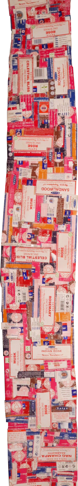
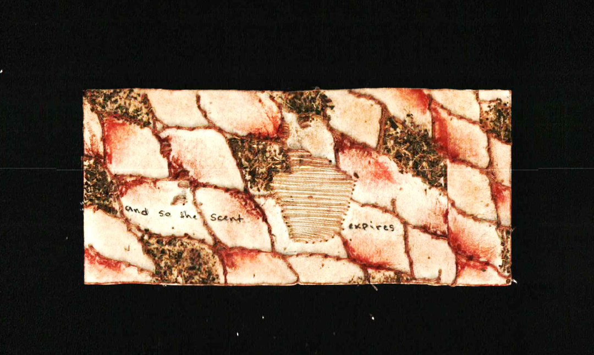
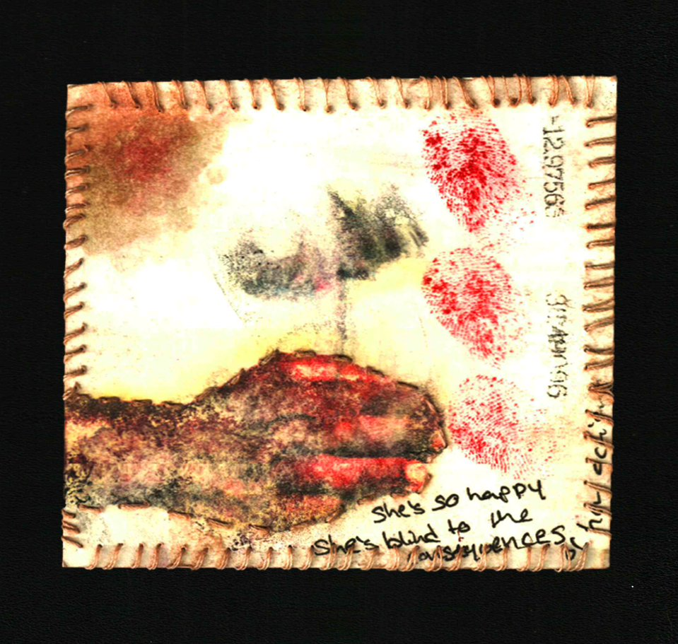
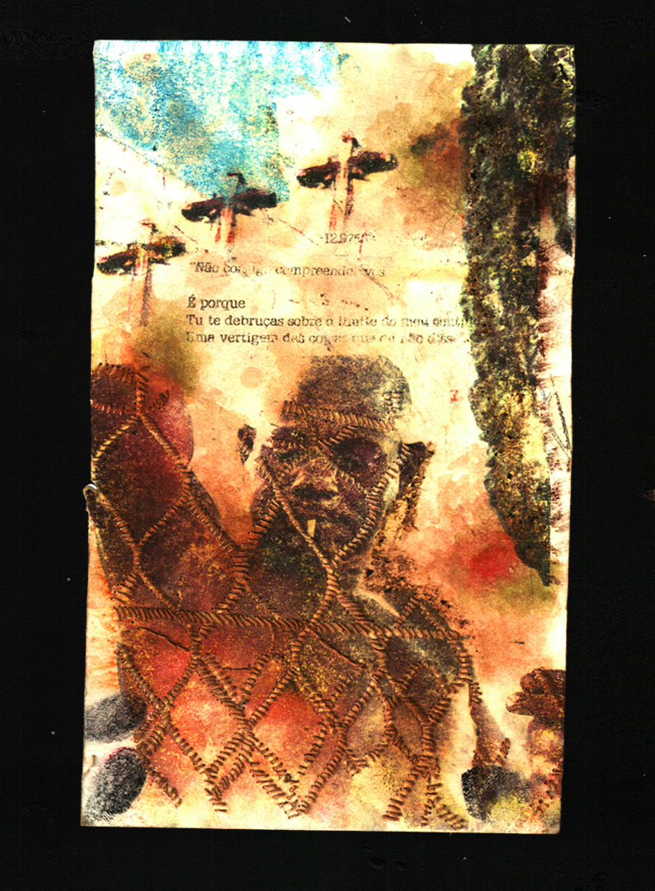
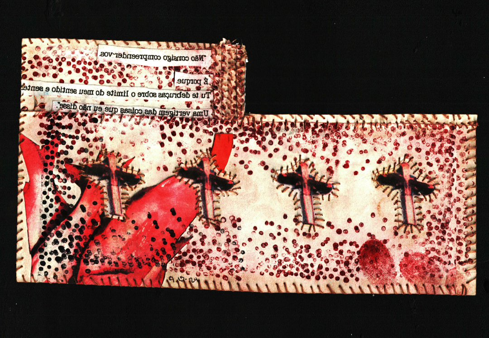
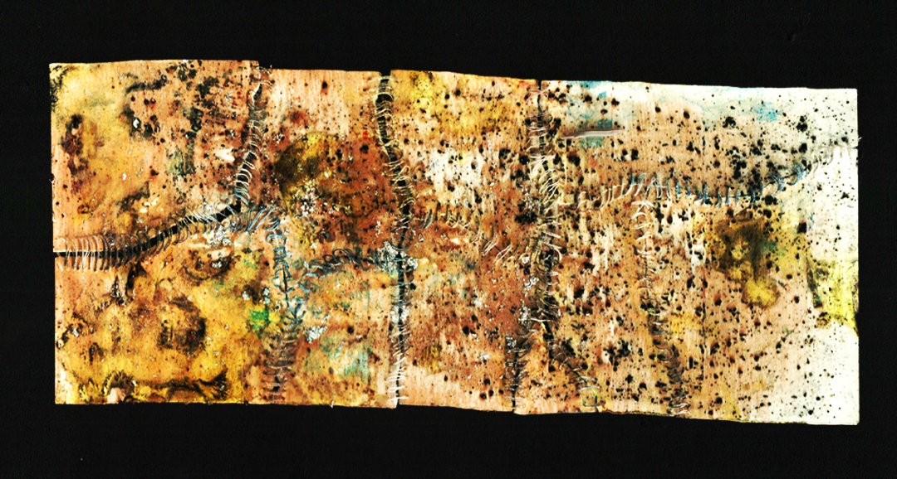
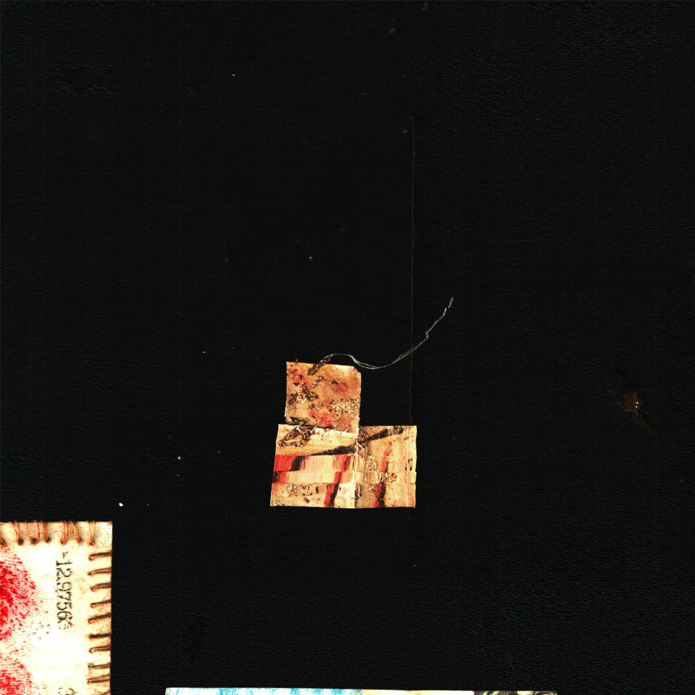
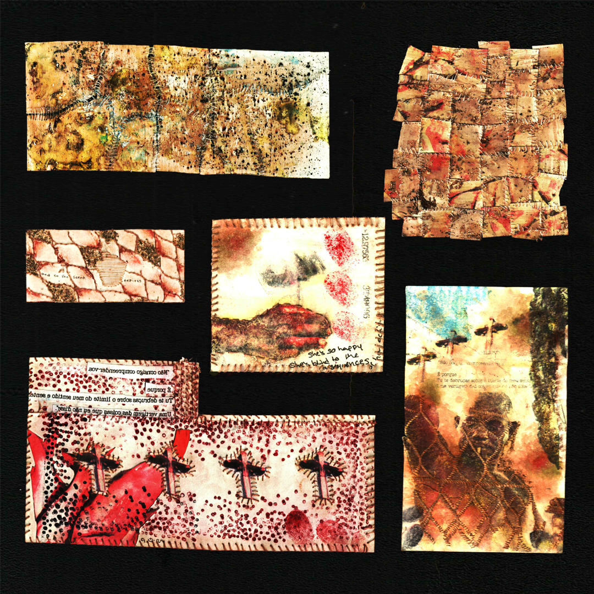

๋࣭⭑꒷꒦ Stuff ꒦꒷⭑࣭ ๋
I make random stuff sometimes and want to share that stuff. Here are the select projects.
top = most recent upload
made: xx.10 - 12.'25 | no title
materials: thread, incesne boxes
dimensions: 3.9" x 4.2"



This came into existence because I needed something to do behind the desk at my (former) front desk job towards the end of 2025. That's pretty much it. By the time I ran out of boxes, 3 months had passed and the "tapistry" was about 4' long. Gave it to my aunt for christmas lol. These photos are nice and crispy because I took them on a proper camera. I accidentally deleted all trace of these photos/files on my computer and hard drive somehow, but luckily had these photos on my ipad. Not the first time I've deleted entire projects without catching it shrug.
made: xx.10 - 11.'24 | AEROBICS, ex .6 - 5
materials: tea leaves, water color, pastel, glass medium, ink, stamp, acetone transfer, thread | handscanned and edited
dimensions: idk. ex.6,ex 1: ~2" x ~2" | ex.2, ex 3, ex 4: ~4" x ~8" | ex 5: < 10" x 10"
song:uncanny otion // Flat Earth - J. Albert Meets Will August Park
[this song and work go hand in hand ↑ highly recommned listening]







This series of exercises occurred at the beginning of the end for a lot things: living situaiton, romantic situation, friendship situation, work situation. I see it as that now in retrospect, but in the moment I was just like "Wow there's a lot of crap going on rn :D", then I would go for a 3 hour walk and get high.
I acquired the most essential components of these collages (all the graphical elements) from a guy in which I had a very short lived and confusing dynamic with. He would travel to Brazil months at a time and take photos. One day we sat down to collage, he gave me a fat folder with what he had printed and told me I could do what I need with them. I sifted through them and took a few I liked.
Come a week later, I gave him back his folder and ended our dynamic haha, but kept the pieces I liked cuz I wanted to make with them. Making this was an on and off affair of play. I'd leave them out or pinned them to a wall, mess around with them after work for a few hours, whatever. Evnetually I placed them in a sketchbook which is usually a set in stone thing, for me for some reaosn. It wasn't until I showed them to a good friend who suggested I take them out and work on them again. So I did. For the whole process, It wasn't like I started and recognized I had work. I just kept coming back to them and eventually I was like "wait these are good." lol.
Utilizing a hand scanner vs. a phone or printer scanner has a quality of its own that's essential to how these look digitally. The way these pop really satisfy my soul, but as I haven't looked at this in a while, I wish I had some photos of the phyiscal too. One day.
~ start of stuff~
Oree's Storees © 2026 is licensed under CC BY-NC-SA 4.0